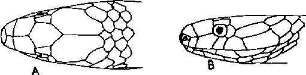

|
Digitized Inventory of Animal Resources: Reptilia ( Snakes ) Principal Investigator: Dr. R. J. B Alfred, Co-Investigator: Dr. Rama Krishna, Contributed by:
Dr. R.C.Sharma |
Blythia reticulata (Blyth 1854)
Taxonomic
Details
----- Scientific Name
----- Classification
----- Synonyms
----- Common Names
Other
Biological Details
----- Habit and
Habitat
----- Distribution
---------- Extent of
Occurrence
---------- Area of occurrence
---------- Altitude
---------- Population
-----
Conservation Status
-----
Diagnostic
Features
-----
Breeding system
Miscellaneous
Information
Literature
Genus . Blythia Theobald 1868
Maxillary teeth 20 to 22, those in the middle slightly longer than the others. Body cylindrical. Head not distinct from the neck. Eye with rounded or vertically subelliptic pupil. Nostril between two small nasals, or between them and the 1st Supralabial. Neither loreal, nor preocular. Rostral is as high as broad, visible from above; internasals half, or less than half, the length of the prefrontals, frontal shield is large, nearly two times broader than the supraocular, much shorter than the parietals. Anterior temporal 1. Supralabials 6, rarely 5, the 3rd and 4th touching the eye, the 3rd is broad in contact with the prefrontal. Anterior sublingual at least twice as long as the posterior; the latter in contact with the Ist ventral. Scales smooth, in 13 rows throughout, without apical pits. Ventrals rounded. Tail short; subcaudals paired. Hemipenis is undivided and complete organ bears spines, which are placed on folds of skin which are longitudinally arranged, at the distal end of the penis and extending for about 1/3 of its length, are two longitudinal folds.
Scientific Name : Blythia reticulata (Blyth 1854)
Family :
Classification: Genus .
Synonyms:
Common Names: blyth's
reticulated snake
HABIT & HABITAT Oviparous, Hill species
Distribution:
Altitude:
Conservation status: Common not in abundance
Length : The maximum length of the snake is 315 mm., tail 40 mm., in males and 410 mm., tail 45 mm., in females.
Body : Other characters are as given in the genus.
Scales : Ventrals 122-157; subcaudals; male 26-32, female 16-24, anals 2.
Colouration : The dorsal colouration is olive to blackish, highly iridescent. Juveniles are with a white collar interrupted on the vertebral line. This pattern fades out in adult individuals completely.
Breeding Biology : Oviparous

Bluthia reticulata (Blyth) : Head A. Dorsal view B. Lateral view